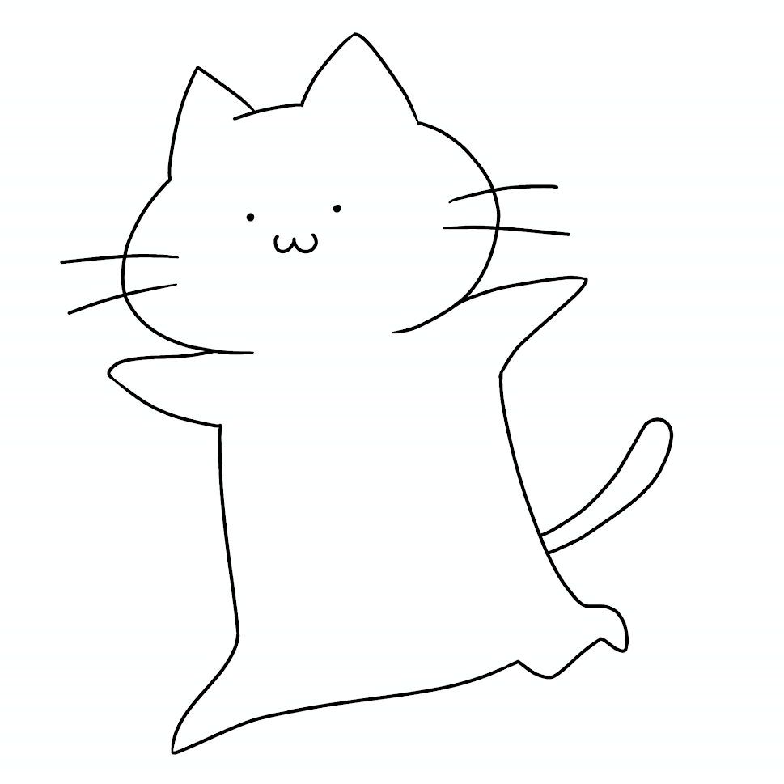
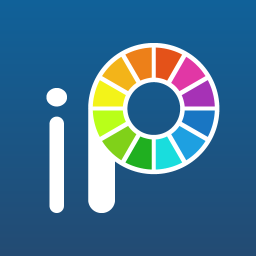
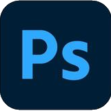
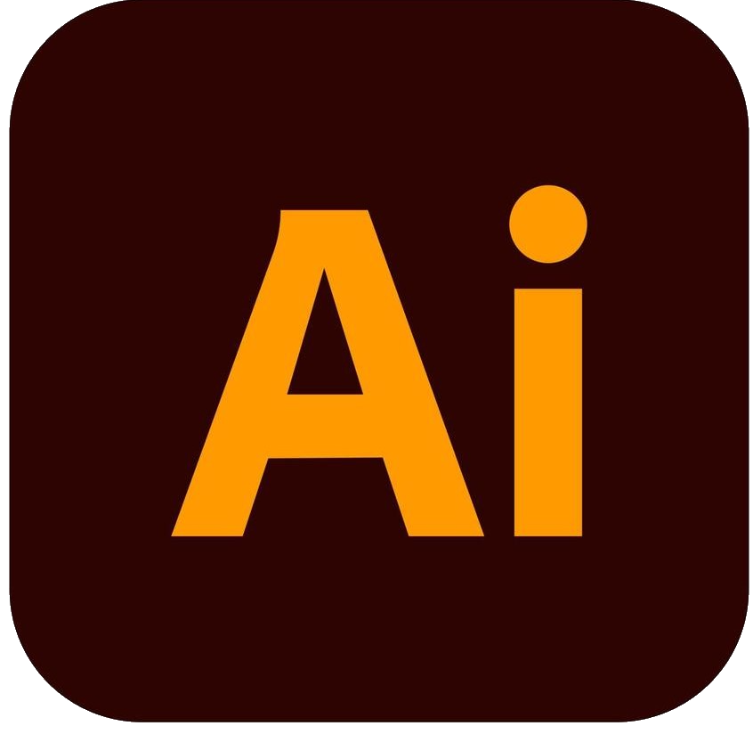
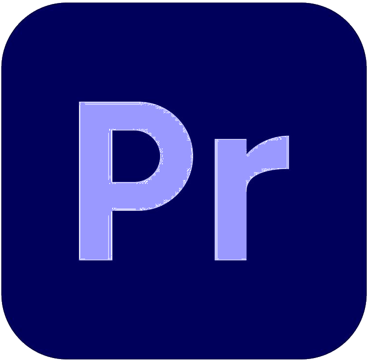
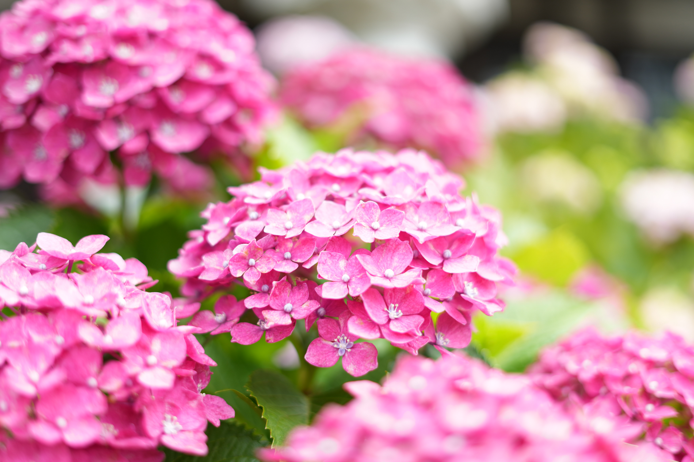

自己紹介

高校・大学と芸術系を専攻し、表現力を磨いてきました。
現職では、自分の仕事がもたらす成果や貢献度が実感しにくく、
学生時代から諦めきれなかった
「デザインやアイデアで人に喜ばれ、評価される仕事がしたい」
という想いから、現在はHTML/CSS、Javascriptの学習に励んでいます。
スキル
3級ウェブデザイン技能士
現在は2級ウェブデザイン技能士の資格取得に向けて学習中
使用したことのあるソフト
CLIP STUDIO PAINT 
ibis-Paint 
Photoshop 
Illustrator 
Premiere pro Visual Studio Code
趣味
以前からスマホで写真を撮ることが好きでしたが、
最近ミラーレスカメラを手に取り、本格的に撮影を始めました。
自然の静けさや、夜の街を彩る都会的な光、力強さと曲線美が両立するマシンなど、
ファインダー越しに見つける新しい発見に夢中になっています。
